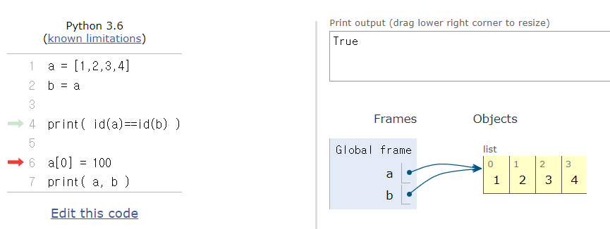

👀
Home
읽은 책
지식관리
개발환경
오답노트
시각화
블로그
Contact
파이썬 오답노트
오답노트
파이썬
파이썬 오답노트
알고리즘
알고리즘
파이썬 오답노트
Dictionary Methods List
created: 2022-10-07
lazychoi
GIL(Global Interpreter Lock)
참고:
lazychoi
a = 1의 의미 요약
출처 1 출처 2
Oct 11, 2022
lazychoi
argparse
출처: tiny python project 부록 pp.457~481
Oct 11, 2022
lazychoi
json 데이터 크롤링
교보문고 베스트셀러 데이터 크롤링(최대 100위까지)
Oct 13, 2022
lazychoi
os module
os.path.basename, os.path.dirname
Oct 17, 2022
lazychoi
str.translate()
문자열을 딕셔너리에 정의한 문자로 바꾼다.
Oct 17, 2022
lazychoi
구조체와 클래스
Oct 14, 2022
lazychoi

깊은 복사(deep copy) vs 얉은 복사(shallow copy)
좋은 코드 실행 시각화 도구: python tutor
lazychoi
리스트 내장 함수
Oct 31, 2022
lazychoi
리스트 내장 함수
리스트변수.reverse() 함수는 반환값이 없고 자신을 변경하는 점을 주의해야 한다.
Oct 30, 2022
lazychoi
문자열
문자열 -> 개별 문자 리스트로 변환
Oct 30, 2022
lazychoi
주피터 노트북이 두 개 설치되어 발생하는 오류 해결
jupyter nbconvert –to markdown 06court_sort.ipynb
Oct 17, 2022
lazychoi
줄번호 출력
출처
Oct 14, 2022
lazychoi
크롤링 in wsl
설치 및 환경설정 참고 사이트(영문)
Oct 12, 2022
lazychoi
파이썬에서 모든 것은 객체다 요약
출처
Oct 11, 2022
lazychoi
No matching items